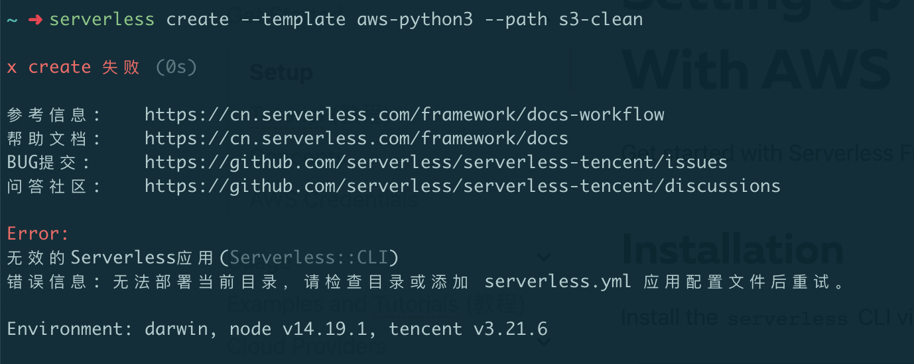

背景
因为我的 bossku ，需要定期将全量数据库数据进行备份，我之前写过一篇文章分享我是如何将数据库备份到 S3 的：https://jiapan.me/2020/auto-backup-database/
由于不想为这个存储付费，所以我在 Things 中创建了一个周期性的任务，每周六提醒我来清理前一段时间的过期数据，通常我只保留最近两天的，将其余的删除。
最开始我是登录到 S3 的网站上进行操作，后来嫌麻烦，就将 S3 挂载到了本地（使用的是 QSpace 这个软件），每周六定期在本地进行删除操作。
本着 DRY（Don’t repeat yourself）原则，能自动化的事就不要自己重复去做，所以我准备写个脚本定期处理。
S3 提供了很完善的 API 可以让程序方便的进行操作，各个语言也都提供了 S3 API 的 SDK 封装，我要做的就是周期性的调取文件列表，判断如果文件超过 2 天则进行删除。这样的动作使用 Serverless 最合适不过了，这一次我还是选择使用我最熟悉的 AWS Lambda ，使用的语言也是万能、灵活的 Python。
初始化项目
首先我们初始化一个 Serverless 项目：
1 | SLS_GEO_LOCATION=en serverless create --template aws-python --path s3-clean |
没有 serverless 的可以先参考官方手册 进行安装，这不是本文的重点。
注意下上边命令最前边的 SLS_GEO_LOCATION=en，这个一定要加，因为 serverless 做了一件有些流氓的事：判断你的所在地是中国的话，会走腾讯的服务，他们是没有 aws 模板的，报错如下：

加上 SLS_GEO_LOCATION=en 可以将我们的地区强制指定到国外，这样就会走官方的逻辑（腾讯这个行为太 low 了）。
进入上边 serverless 为我们创建出来的项目，可以看到生成好了两个文件，我们来编辑 handler.py 文件：
1 | import os |
流程比较简单：
- 初始化 sdk
- 关联 bucket
- 取全部文件列表
- 对全部文件按照时间正序排（旧的在前）
- 删除倒数第二个文件之前的所有文件
上边代码中一些参数通过环境变量进行获取，稍后我们会在配置文件中介绍这几个参数。
然后我们编辑 serverless.yml 文件，这个是我们服务的配置文件：
1 | service: bossku-s3-clean |
provider.region 用来指定我们的服务启动在哪个地区，我这里配置了一个 S3_REGION 的占位，用来从我本地环境变量获取，目的是和我们的 S3 在同一个地区，这样理论上连通性会跟好一些。
provider.environment 就是给程序提供运行时环境变量的地方，也就对应我们程序中 os.environ['xxx']，每一个我都和本地一个同名的环境变量相关联。
S3_REGION表示存储文件时使用的 S3 区域，比如：ap-east-1S3_BUCKET用来指定程序要读写的 bucketS3_ACCESS_KEY_IDS3 API 的 ACCESS KEYS3_SECRET_ACCESS_KEYS3 API 的 SECRET KEY
再往下的 functions 是用来声明函数的区域，我将我们的 delete_backup 关联了两个事件：
- 每天 0 点 45 分（北京时间早上 8 点 45 分）定时启动。
- 让 Lambda 提供给我们一个 HTTP 的 GET 请求，用来手动触发便于调试。
做完这些我们还有一个工作，将程序所依赖的 boto3 安装在项目目录下，这样就会在发布时会一起上传到 Lambda 中，Lambda 本身是不带这个包的，而且不支持 pip 安装。
1 | pip install boto3==1.23.8 --target=. |
接下来就可以部署到 Lambda 进行验证了，我们可以先将程序中的 item.delete() 进行注释，观察下日志看看流程是否正常。
部署
部署脚本如下：
1 | export AWS_ACCESS_KEY_ID=YOUR_AWS_ACCESS_KEY_ID |
如图可以看到发布成功了，我们访问 Lambda 提供给我们的 endpoint 来手动触发下这个函数。
成功了，我们再到 Lambda 的操作界面看下日志，我通常是在函数的【监控】-【查看 CloudWatch 中的警报】-【日志组】中看日志，应该有我不知道的更方便的方式，后边学会了再做补充吧。
可以看到整个流程是 ok 的。
我们将 item.delete() 的注释取消掉再发布一次就可以了。
通过 Bark 通知我
为了在每次删除后都能及时的收到通知，我通过 Bark 给我的手机发个通知。我们只需将 delete_backup 函数改成这样就可以了：
1 | def delete_backup(event, context): |
别忘了在本地目录安装 requests 包：
1 | pip install requests==2.27.1 --target=. |
再次发布，然后我手动触发两次，第一次文件超过 2 个所以可以执行成功，第二次文件不足两个执行失败，符合我们的预期。
这样我就不用再在每周六手动清理这些文件了。